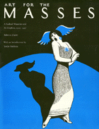

The first study of the art in The Masses and the changing role that pictures played in the magazine’s political message
The first study of the art in The Masses and the changing role that pictures played in the magazine’s political message


 The first study of the art in The Masses and the changing role that pictures played in the magazine’s political message
The first study of the art in The Masses and the changing role that pictures played in the magazine’s political message

|  |
Art for The MassesA Radical Magazine and Its Graphics, 1911-1917Rebecca Zurier, introduction by Leslie Fishbeinpaper EAN: 978-0-87722-670-3 (ISBN: 0-87722-670-9) |
Association of American University Presses Book Jacket and Illustration Award, 1989
"Rebecca Zurier has admirably encompassed the intellectual history of the period...but her most valuable contribution lies in the large group of splendid drawings and cartoons.... The visual history here is eloquent."
—Washington Post Book World
A radical journal of culture and commentary, The Masses became, in the early part of this century, a forum for socialists and anarchists, artists and authors attracted to the freedom of expression it espoused. This book, based on an exhibition which was sponsored by the Yale University Art Gallery in 1985-86, is the first study of the art in The Masses and the changing role that pictures played in the magazine’s political message. Rebecca Zurier examines the origins of The Masses’ graphic style in American realism, labor cartoons, and European satire, and relates the magazine’s positions to the issues of the day-a period when humor, art, and political struggles all seemed to be compatible. The 149 illustrations present an album of cartoons that are still startlingly fresh.
While one could find in any issue commentary by Max Eastman, Walter Lippmann, Bill Haywood, or John Reed; and literary pieces by Sherwood Anderson, Carl Sandburg, Amy Lowell, or Louis Untermeyer; the visual impact of the magazine was, perhaps, its most enduring. The Masses published political cartoons by Robert Minor, Boardman Robinson, and Art Young; fine drawings by Arthur B. Davies, Abraham Walkowitz, and Pablo Picasso: and an abundance of work by the American realists later known as the Ashcan School, among them John Sloan, George Bellows, Glenn Coleman, Robert Henri, and the young Stuart Davis. Although the magazine did not pay its contributors, for seven years artists and writers donated some of their best work because they believed in its ideals of social change and artistic independence.
Aiming to "conciliate nobody, not even our readers," The Masses was widely recognized as one of the best-edited and best-produced magazines in America, considered by some to be a left-wing forerunner of The New Yorker. However, because of its strident anti-war stance, when the Espionage Act went into effect in 1917, the U.S. government forced The Masses to cease publication.
"Handsomely packaged to resemble its subject the book is a compelling study of art and politics in the innocent, optimistic years before the Bolshevik Revolution and America’s involvement in World War I."
—David M. Oshinsky, The New York Times Book Review
"[Zurier] is a confident and skilled guide through this exotic and distant world of political graphics. [This] examination of The Masses’ artistic contribution, is brilliant, full of insight and subtle appreciation."
—Richard Samuel West, The Philadelphia Inquirer
"The volume is abundantly illustrated with the work of the Ashcan school along with the cartoons of such luminaries as Robert Minor and Art Young and the fine work of Picasso. Short biographies of the artists are included, as well as a helpful index. The book is nicely designed and illustrations are well printed...this book is a must."
—Choice
"This album documenting a 1985-86 Yale University exhibition is a wellspring of inspiration for activists and artists."
—Publishers Weekly
"This handsome, foot-high study is a contribution to the history of both American art and left-wing politics...a historical and analytic text that reads smoothly."
—Booklist
"Art for The Masses evokes an important era in American culture and American politics."
—The Progressive
Rebecca Zurier holds a doctoral degree in the History of Art from Yale University and was curator of the exhibition, "Art for The Masses.”
Art and Photography
American Studies
© 2015 Temple University. All Rights Reserved. This page: http://www.temple.edu/tempress/titles/510_reg.html.